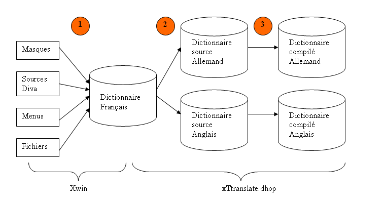

Etape 1 : Extraction des libellés et création du dictionnaire de référence
Cette étape s'effectue depuis Xwin, choix <Outils>< Extraire les libellés en vue de la traduction>.
L'extraction se fait pour un répertoire complet, avec ses sous-répertoires.
Un fichier paramètre permet :
de filtrer certains libellés
d'ajouter les libellés contenus dans des fichiers (menus, fichiers d'erreurs, etc.)
A la fin de cette étape, un dictionnaire de référence est créé (ou mis à jour s'il existe déjà. Dans l'exemple ci-dessous, c'est un dictionnaire Français qui est créé.
Etape 2 : Création des dictionnaires en langue étrangère
Depuis l'utilitaire xTranslate.dhop, les dictionnaires étrangers sont créés, à partir d'un dictionnaire de référence.
Ces dictionnaires sont transmis aux traducteurs.
Etape 3 : Compilation et mise en place des dictionnaires
Après garnissage des dictionnaires par les traducteurs, il ne reste qu'à les compiler (avec xTranslate.dhop) et à les installer.